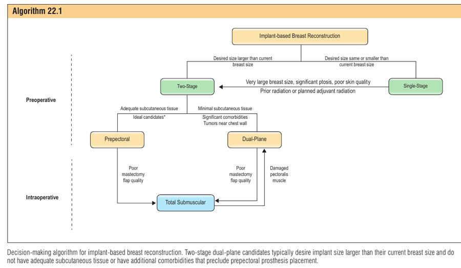

פרק 22: שחזור שד דו-שלבי במישור כפול (Dual-plane) עם שתלים Two-stage dual-plane reconstruction with prosthetic devices
מתוך Plastic Surgery, Neligan – כרך 5: Breast (מהדורה 5) | פרק 22, מאת Ara A. Salibian ו-Nolan S. Karp
שחזור דו-שלבי (two-stage) במישור כפול הוא הניתוח "הקלאסי" של שחזור שד בשתלים: בשלב הראשון, מיד אחרי הכריתה, מכניסים מרחיב רקמות (tissue expander, TE) מתחת לשריר החזה הגדול בקוטב העליון ומעל "ערסל" של מטריצה דרמלית א-תאית (ADM – acellular dermal matrix) בקוטב התחתון. אחרי הרחבה הדרגתית במרפאה, בשלב השני מחליפים את המרחיב בשתל קבוע. גם בעידן של שחזור פרה-פקטורלי (prepectoral) ושתל ישיר (DTI), הטכניקה נשארת כלי מרכזי כי היא בטוחה לדשי המסטקטומיה וגמישה בקביעת הגודל והצורה הסופיים.
1 ההיגיון – למה שני שלבים ולמה מישור כפול
דש מסטקטומיה דק וחלש ← לא יכול לשאת מיד שתל גדול ומתוח ← מכניסים מרחיב מנופח חלקית (לחץ מינימלי על הדש) ← הדש מחלים ומקבל זילוח ← מרחיבים בהדרגה עד לגודל הרצוי ← מחליפים לשתל קבוע ומתקנים כיס, קפל ועור.
למה שני שלבים? העור שנשאר אחרי כריתה (ובמיוחד אחרי NSM – nipple-sparing mastectomy) ניזון רק מהזילוח השטחי של תת-העור (subdermal plexus), כי הכריתה חתכה את כל הפרפורטורים מהשריר ומהבלוטה. כל מתח על הדש לוחץ על כלי הדם הקטנים האלה וגורם לאיסכמיה. מרחיב שמנופח רק חלקית בניתוח "קונה זמן" לדש להחלים. בהמשך ההרחבה מאפשרת שליטה מדויקת בגודל (מטופלת שרוצה שד גדול יותר מהקיים, או שלא החליטה), תיקון צורה בשד עם מורפולוגיה קשה, והתאמה לשד הנגדי בשחזור חד-צדדי. בספרות נמצא יותר סיבוכים איסכמיים ב-NSM עם שחזור חד-שלבי לעומת דו-שלבי – כנראה בגלל המתח על מעטפת העור.
למה מישור כפול? השריר החזה הגדול (pectoralis major) מספק שכבה מזוּלחת מעל הקוטב העליון – שם תת-העור לרוב הכי דק, ולכן שם רואים הכי הרבה קפלים (rippling) ו"מדרגה". אבל שריר בקוטב התחתון מגביל את ההתרחבות, ולכן במקום שריר שמים ADM כערסל תחתון-צידי (inferolateral sling, Breuing ו-Warren, 2005) – הוא נמתח, מאפשר קוטב תחתון מלא וצנוח טבעי, מגדיר את הקפל התת-שדי (IMF) ואת הגבול הצידי, ומאיץ את ההרחבה.
איור 1 – השרשרת הסיבתית: מהגנה על הדש בשלב הראשון עד עיצוב סופי בשלב השני.
2 אנטומיה – מבנה הכיס במישור כפול
בכיס הדו-מישורי יש שלוש "קומות" מעל המרחיב: עור ותת-עור (דש המסטקטומיה) בחוץ, השריר החזה הגדול מעל הקוטב העליון והאמצעי, ו-ADM שתפור מהשפה התחתונה החתוכה של השריר אל הקפל התת-שדי ואל קו בית השחי הקדמי (anterior axillary line). השריר החזה הקטן (pectoralis minor) נשאר על דופן בית החזה.
איור 2 – חתך סכמטי: השריר מחפה את הקוטב העליון, ה-ADM "מחזיק" את הקוטב התחתון ומגדיר את ה-IMF.
משמרים את הצמדות השריר לעצם החזה (מדיאלית) כדי למנוע window-shading (השריר "מתקפל למעלה" כמו וילון בהתכווצות). משמרים את פרפורטורי העורק הפנימי של החזה (internal mammary perforators) – פגיעה בהם גורמת לדימום קשה לשליטה ופוגעת בזילוח המעטפת, וחיתוך-יתר מדיאלי גורם גם ל-symmastia.
3 הערכה טרום-ניתוחית ובחירת מועמדות
אנמנזה ובדיקה
מחלות רקע: סוכרת ו-BMI גבוה – גורמי סיכון לסיבוכים. עישון – גורם סיכון מוכח לריפוי מאוחר ולזיהום; מעשנות לשעבר עם פחות מ-10 שנות-קופסה ויותר מ-5 שנים מהפסקה – תוצאות כמו לא-מעשנות ב-NSM.
אונקולוגיה: שלב, סוג, גודל ומיקום הגידול; כימותרפיה (לרוב נסבלת, אך ייתכן שמעלה סיבוכים); קרינה קודמת או מתוכננת – משמעותית במיוחד בגלל קונטרקטורה קפסולרית וכשל שחזור.
אורח חיים: מטופלות צעירות ופעילות/ספורטאיות – לשקול פרה-פקטורלי כדי להימנע מעיוות תנועה (animation deformity).
בדיקה: מסות וקרבתן לפטמה; מעורבות ה-NAC (הפרשה, נסיגה); צלקות קודמות; מורפולוגיה – טביעת רגל (footprint), גודל, צניחה (ptosis), מיקום IMF; מדידות SN–N, N–IMF, רוחב בסיס; pinch test לקוטב העליון להערכת עובי תת-העור.
MRI טרום-ניתוחי מאפשר למדוד עובי תת-העור מעל קפסולת השד; ירידה יחסית בעובי אחרי הכריתה לעומת לפניה קשורה לסיבוכים איסכמיים.
עץ ההחלטות (Algorithm 22.1)
החלטה
מטה לכיוון…
מטה לכיוון…
חד-שלבי מול דו-שלבי
חד-שלבי: רוצה גודל זהה/קטן מהקיים, ללא גורמי סיכון, שד קטן-בינוני בלי צניחה משמעותית
דו-שלבי: רוצה גודל גדול יותר או לא החליטה; שד גדול מאוד, צניחה משמעותית, עור באיכות ירודה; קרינה קודמת/מתוכננת; דש גרוע תוך-ניתוחית
פרה-פקטורלי מול מישור כפול
פרה-פקטורלי: לא מעשנת, ללא מחלות רקע, תת-עור עבה, צעירה ופעילה; צפויה קרינה משלימה (מונע עיוות מפיברוזיס של השריר)
מישור כפול: תת-עור מינימלי, מחלות רקע משמעותיות/מעשנת פעילה, גידול קרוב לדופן בית החזה, קרינה קודמת
מעבר ל-Total submuscular
החלטה תוך-ניתוחית: דש מסטקטומיה גרוע או שריר חזה פגוע. כיס תת-שרירי מלא (pectoralis + serratus fascia) הוא "המישור הבטוח ביותר", ובדרך כלל מחייב מרחיב כי אין בו מקום לשתל מלא מיידי
למה גידול קרוב לדופן החזה מטה לתת-שרירי? כי יש בו סיכון מוגבר לחזרה בדופן החזה – שתל מתחת לשריר מקל על הדמיה ומעקב ועל מתן קרינה לשריר עצמו אם יידרש.
טכניקת המסטקטומיה והחתך
הפרק משתמש ב-מרחק גידול–פטמה של 1 ס"מ כסף למועמדות ל-NSM (נצפתה מגמה לחזרה גבוהה מתחת ל-1 ס"מ; מסורתית נדרשו 2 ס"מ).
שד גדול מאוד / צניחה קשה – אפשר לשקול הקטנת שד מדורגת לפני NSM, שהוכחה כמפחיתה סיבוכים איסכמיים.
חתך
יתרון
חיסרון / הערה
IMF (מועדף ע"י המחברים ל-NSM)
שומר זילוח מעטפת, צלקת מוסתרת בקפל
שיעור סיבוכים נמוך יותר בניסיון המחברים
צידי / רדיאלי אנכי
גישה טובה, צלקת סבירה; רדיאלי – אולי פחות פוגע בזילוח
–
T הפוך
גישה רחבה ועיצוב מעטפת
יותר איסכמיה בצומת ה-T
פרי-אראולרי
–
נמנעים אצל המחברים – שיעור גבוה של נמק NAC
אליפטי כולל NAC (SSM)
מסיר עור מעל גידול שטחי
למרכז את החתך בין ארבעת גבולות השד כדי לשמור זילוח לשולי החתך
בחירת מרחיב וחומר תמיכה
הערכה ראשונית: תכנון דו-ממדי (biodimensional) לפי רוחב בסיס השד; לא לבחור מרחיב רחב מהשד הטבעי. הבחירה הסופית – תוך-ניתוחית, לפי רוחב הכיס מהגבול המדיאלי של חלל הכריתה עד קו בית השחי הקדמי, ובמקום שני לפי משקל התכשיר.
העדפת המחברים: מרחיבים חלקים עם לשוניות (tabs) לקיבוע לדופן.
ADM: הכי נחקר; בטיחות סבירה אך יותר סרומה וזיהום במחקרים גדולים. תכשירים סטריליים "מוכנים לשימוש" (היום הסטנדרט) – פחות זיהומים מתכשירים אספטיים. העדפה: ADM דק ומחורר (fenestrated) – משפר התמזגות וניקוז דו-כיווני.
רשת סינתטית נספגת (Polyglactin 910 / Vicryl): חלופה זולה, שיעורי סיבוכים נמוכים; נספגת מהר, והשפעתה ארוכת הטווח על קונטרקטורה עדיין לא ברורה.

עץ החלטות לשחזור מבוסס שתל — Neligan 5th ed., Algorithm 22.1
מקרה: שחזור חד-צדדי עם סימטריזציה של הצד הנגדי — Neligan 5th ed., Fig. 22.3
4 טכניקה – שלב ראשון (מרחיב)
הכנה
סימון בעמידה (sternal notch, קו אמצע, IMF, גבולות עליון וצידי, חתכים). שכיבה על הגב, ידיים ב-75–90°, אגן וכתפיים ישרים (למנוע עיוות סימטריה), חבישות דביקות בשולי השדה. הזרקה של תמיסה מדוללת עם אדרנלין ומאלחש מקומי להקלת הדיסקציה ולהפחתת דימום.
מסטקטומיה והערכת הדש
דיסקציה אנטומית במישור שמעל קפסולת השד, ששומרת את תת-העור – חשוב לשמור מישור ולא עובי קבוע, כי עובי תת-העור משתנה בין אזורים. גישה צוותית: המנתח הפלסטי נוכח בתחילת הניתוח לסימון, הזרקה ותכנון. לאחר הכריתה בודקים:
ICG angiography כעזר – אך יעילותה מוגבלת כשהוזרקה תמיסה עם אדרנלין (כיווץ כלי דם מדמה היפופרפוזיה).
SSM – כורתים אזורים פגועים כל עוד לא נפגעת הסגירה. NSM עם זילוח מדאיג – מעבר לתת-שרירי מלא או דחיית השחזור.
דיסקציית הכיס
זיהוי השפה הצידית של ה-pectoralis major, חיתוך הפאסיה והרמת השריר מדיאלית מעל הצלעות, משאירים את pectoralis minor על הדופן.
ניתוק מוקדם של השפה התחתונה של השריר מהצלעות, מדיאלית – אבל שומרים את ההצמדות לסטרנום (מניעת window-shading). לא תמיד צריך לנתק את כל השפה התחתונה כי ה-ADM מכסה תחתון-צידית.
כיס תת-שרירי בגודל המרחיב – בלי חיתוך-יתר מדיאלי (פרפורטורים, ריפוי מאוחר, symmastia).
הכנסת מרחיב ו-ADM
שטיפת הכיס בתמיסה אנטיביוטית, החלפת כפפות לכל הצוות, מינימום מגע – הכל כדי להפחית חיידקים/ביופילם ולכן קונטרקטורה.
המרחיב: מנתח אחד מטפל בו, מוציאים אוויר, שוטפים ב-Betadine מדולל, מפשקים חדשים; מיקום מדיאלי ואוריינטציה נכונה; קיבוע הלשוניות ב-2–3 נקודות ב-2-0 PDS (לא-נספג אם המרחיב יישאר זמן רב).
ה-ADM: "אין להתייחס אליו אחרת מהשתל" – גוף זר לא מזוּלח. נתפר קודם לשפה התחתונה של ה-IMF ולדופן, ואז תחתון-צידית עד קו בית השחי הקדמי (2-0 Vicryl) במתח קל; אחרי ניפוח המרחיב – קוטמים את שפתו העליונה ותופרים לשפת השריר החתוכה.
ניפוח זהיר במלח – מילוי מסוים בלי לחץ על הדש.
סגירה וטיפול לאחר הניתוח
נקז גדול (fluted) תת-עורי דרך חתך נפרד ב-IMF הצידי; ב-NSM – קיבוע ה-NAC לשריר בתפר נספג מהיר; סגירה ברבדים אטומה למים; מאלחש ארוך-טווח דרך הנקזים.
לילה באשפוז; 3 מנות אנטיביוטיקה IV, ואז פומית עד הוצאת נקזים (גוף זר בכיס); משכך כאב מולטימודלי; מרפה שרירים פומי לעוויתות השריר המורם.
הוצאת נקזים: פחות מ-30 מ"ל ליומיים רצופים. חבישות שבוע. תרגילי מתיחה אחרי הוצאת הנקזים.
ההרחבה
מתחילים לא לפני שבועיים, 30–60 מ"ל בביקור, כל 1–2 שבועות. כל חשד לבעיית ריפוי/זיהום – עוצרים (לחץ נוסף מחמיר איסכמיה) ומטפלים לפני חידוש. מתעדים כל מילוי ואת הנפח המצטבר.
הפרוטוקולים משתנים; יש שדורשים ריקון המרחיב לפני קרינה (במיוחד בהקרנת בלוטות internal mammary).
המחברים: ניפוח מהיר לפני הקרינה, ריקון חלקי לפי צורך לתכנון הקרינה; החלפה כשהרקמות נרגעו ולפחות 3 חודשים אחרי סיום הקרינה.
ללא קרינה – החלפה כ-3 חודשים אחרי הכנסת המרחיב; עם קרינה – 6 חודשים ומעלה.
6 שלב שני – החלפה לשתל קבוע
הערכה ובחירת שתל
בודקים מיקום המרחיב, סימטריה, צורה, מיקום ה-IMF; מאל-פוזיציה אנכית (לרוב עליונה) – ומבררים סיבה (IMF מורם, קונטרקטורה, עיוות עור); אופקית – צורך בקפסולורפיה/קפסולוטומיה; אזורי עור דקים – להשתלת שומן; ב-NSM – מיקום הפטמה; בחד-צדדי – ניתוח סימטריה נגדי.
שתלים חלקים עגולים בכל המקרים – בגלל הקשר בין שתלים מחוספסים ל-BIA-ALCL.
נפח השתל מעט גדול מנפח המרחיב – למלא את הכיס ולמנוע rippling; לרוב פרופיל בינוני או מלא. סגירה ללא מתח – אם יש מתח, מקטינים נפח/פרופיל.
לכידות (cohesivity): שתל לכיד/יציב-צורה מתאים לצורך במלאות קוטב עליון ולמעטפת דקה עם סיכון rippling – במחיר נמישות וקשיחות גבוהות יותר.
מהלך הניתוח (Box 22.4 + Algorithm 22.2)
סימון בעמידה (IMF – קשה להעריך בשכיבה); הכנת כל בית החזה.
כניסה דרך הצלקת, הרמת דשי שומן-עור של 1 ס"מ – כניסה לכיס במפלס שונה מחתך העור.
הוצאת המרחיב ובדיקתו; שאיבת נוזל; בדיקת הקפסולה וביופסיה לפי צורך; הסרת ADM שלא התמזג (מוקד לזיהום וסרומה).
קפסולוטומיה בבסיס הכיס כמעט תמיד, 1 ס"מ מעל דופן החזה, מ-11 עד 5 (זהירות מדיאלית – פרפורטורים ו-symmastia); רדיאליות לפי צורך. האזור עם ה-ADM המתמזג עבה ומגביל הקרנה – לכן לעיתים נדרשת קפסולוטומיה נרחבת של הקוטב התחתון (רדיאלית ומעגלית) עד שהקפסולה "משתחררת".
תיקון IMF: הרמה – קפסולורפיה תחתונה בתפרי 8 (0-Ethibond), בדיקה חוזרת בישיבה; הורדה – קפסולוטומיה לכל אורך השפה התחתונה, דיסקציה תת-עורית לקפל החדש וקיבוע מחדש לדופן; תמיכה ב-ADM/רשת לפי הצורך.
מאל-פוזיציה אופקית: לרוב צריך הרחבה מדיאלית – קפסולוטומיה מדיאלית (cross-hatching / קפסולקטומיה בעמידות) + קפסולורפיה צידית לסגירת מרחב מת צידי.
קל – ניסיון אנטיביוטיקה פומית, סף נמוך ל-IV ושטיפה; עם דהיסנס/נמק/סרומה גדולה – הוצאת השתל, אנטיביוטיקה ממושכת, החזרה מאוחרת
נמק דש / NAC (7–11% כולל חלקי)
זילוח שטחי בלבד, מתח, צריבה
חלקי – טיפול פצעים ומעקב; מלא – הטריה מוקדמת; היפופרפוזיה – חמצן היפרברי, משחת ניטרוגליצרין. ADM הוא גורם סיכון להוצאת שתל כשיש איסכמיה (גוף זר מתחת לרקמה איסכמית)
קשה – המרה לכיס פרה-פקטורלי (אם תת-העור מספיק): שחרור השריר ותפירתו חזרה לדופן, השתלת שומן
בשלב השני הסיבוכים החריפים (המטומה, סרומה, זיהום, נמק) נדירים יותר – ניתוח קטן יותר ומעטפת יציבה.
8 טכניקות זכירה
קוד המספרים: 2 – 30/60 – 30×2 – 3/6
2 – שבועיים לפחות עד תחילת ההרחבה. 30–60 – מ"ל בכל ביקור הרחבה (כל 1–2 שבועות). 30 × 2 – הנקז יוצא בפחות מ-30 מ"ל ליומיים רצופים. 3 / 6 – חודשים עד החלפה: 3 בלי קרינה, 6+ עם קרינה (ולפחות 3 חודשים אחרי סיום הקרינה).
שלב ההחלפה: "B-C-F-S-I-F" – Biopsy, Capsulotomy, Fold, Side, Implant, Fat
ביופסיה/בדיקת קפסולה והסרת ADM לא מתמזג ← קפסולוטומיה (בסיס + רדיאלית) ← תיקון הקפל (IMF) ← תיקון צד (קפסולורפיה צידית/קפסולוטומיה מדיאלית) ← sizer בישיבה ובחירת שתל חלק עגול ← שומן לקוטב העליון.
סיפור דמיוני: הדלעת בערסל
גנן מגדל דלעת ענקית (השתל) בחממה שהגג שלה עשוי קרשים קשיחים (השריר החזה) – טובים כדי שלא ייראו "גלים" מלמעלה, אבל הם לא נמתחים. לכן בחלק התחתון הוא תולה ערסל רך (ה-ADM) שמאפשר לדלעת לשקוע ולהתעגל כמו שד טבעי. הוא לא שותל מיד דלעת ענקית – הקירות (העור) עדיין חלשים – אלא מתחיל בזרע קטן ומשקה קצת בכל שבוע (הרחבה). אחרי שלושה חודשים הוא מחליף אותה בדלעת "אמיתית" מעט גדולה יותר, ומסדר את הערסל שהתקשה (קפסולוטומיה).
9 מקורות מהימנים
Salibian AA, Karp NS. Two-stage dual-plane reconstruction with prosthetic devices. In: Neligan PC, ed. Plastic Surgery, 5th ed., Vol 5, Ch 22. Elsevier.מקור עיקרי
הפרק שעליו מבוסס הסיכום, כולל Algorithms 22.1–22.2 ו-Boxes 22.1–22.4.
Breuing KH, Warren SM. Immediate bilateral breast reconstruction with implants and inferolateral AlloDerm slings. Ann Plast Surg 2005;55:232–239.
המאמר שהכניס את ה-ADM כערסל תחתון-צידי לשחזור ראשוני – הבסיס לטכניקה.
Cordeiro PG, Albornoz CR, McCormick B, et al. What is the optimum timing of postmastectomy radiotherapy in two-stage prosthetic reconstruction? Plast Reconstr Surg 2015;135:1509–1517.
קרינה על מרחיב (כשל שחזור) מול קרינה על שתל (קונטרקטורה).
Frey JD, Choi M, Salibian AA, Karp NS. Comparison of outcomes with tissue expander, immediate implant, and autologous breast reconstruction in greater than 1000 nipple-sparing mastectomies. Plast Reconstr Surg 2017;139:1300–1310.
יותר סיבוכים איסכמיים בחד-שלבי לעומת דו-שלבי ב-NSM.
Kim JY, Davila AA, Persing S, et al. A meta-analysis of human acellular dermis and submuscular tissue expander breast reconstruction. Plast Reconstr Surg 2012;129:28–41.
שיעורי סיבוכים כוללים (~15%), סרומה וזיהום עם ADM.
Weichman KE, Wilson SC, Saadeh PB, et al. Sterile "ready-to-use" AlloDerm decreases postoperative infectious complications. Plast Reconstr Surg 2013;132:725–736.
ADM סטרילי מול אספטי – ירידה בזיהומים.
10 מקרה קליני ותרגול
וינייטה
אישה בת 46 עם קרצינומה דוקטלית בשד שמאל, 3 ס"מ מהפטמה, מתוכננת ל-NSM דו-צדדית. היא רוצה שד גדול מעט מהנוכחי. BMI 20, ב-pinch test ובקוטב העליון ב-MRI – תת-עור דק. אינה מעשנת. בניתוח, אחרי הזרקת תמיסה עם אדרנלין והכריתה, הדשים נראים סבירים עם דימום שוליים תקין. מוכנס מרחיב חלק עם לשוניות מתחת ל-pectoralis major עם ערסל ADM תחתון-צידי, מנופח חלקית. אחרי שבועיים מתחילים הרחבה. בפתולוגיה – בלוטות חיוביות, ומומלצת קרינה משלימה.
1. מדוע נבחר אצלה שחזור דו-שלבי במישור כפול ולא שתל ישיר פרה-פקטורלי?
הנכון: לפי Algorithm 22.1, רצון בגודל גדול יותר מכוון לדו-שלבי, ותת-עור מינימלי מכוון למישור כפול – השריר מוסיף שכבה מזוּלחת ומונע rippling ו"מדרגה" בקוטב העליון. גיל אינו הקריטריון (צעירות ופעילות דווקא מועדפות לפרה-פקטורלי); ADM משמש גם בפרה-פקטורלי; מרחק 3 ס"מ מהפטמה רלוונטי למועמדות ל-NSM (סף 1 ס"מ), וכיסוי שרירי מועדף בגידול קרוב לדופן החזה, לא לפטמה.
2. במהלך הרמת השריר, המנתח מנתק את השפה התחתונה אך משאיר את ההצמדות לעצם החזה. מה המטרה העיקרית?
הנכון: הפרק מציין במפורש ששמירת ההצמדות המדיאליות לסטרנום מפחיתה window-shading. pectoralis minor נשאר על הדופן ממילא ואינו קשור לשאלה; מיקום המרחיב צריך להיות מדיאלי, לא צידי; thoracodorsal נמצא בבית השחי/latissimus ואינו רלוונטי לניתוק מהסטרנום.
3. במהלך הניתוח שוקלים ICG angiography להערכת הדש. מה המגבלה שהפרק מציין במקרה זה?
הנכון: אדרנלין גורם לכיווץ כלי דם עוריים, כך שהאנגיוגרפיה עלולה להראות זילוח ירוד שאינו אמיתי. לכן ההערכה הקלינית (עובי, דימום שוליים, capillary refill, כוויות, דרמיס חשוף) נשארת מרכזית. שאר התשובות אינן מופיעות בפרק ואינן נכונות.
4. המטופלת תקבל קרינה משלימה. מה נכון לגבי הקרנת מרחיב לעומת שתל קבוע, ומה גישת המחברים?
הנכון: זו "הדילמה" שהפרק מתאר – מרחיב מוקרן = כשל שחזור, שתל מוקרן = קונטרקטורה ותוצאה אסתטית פחותה. המחברים מעדיפים ניפוח מהיר לפני הקרינה (ריקון חלקי אם הקרינה דורשת), והחלפה כשהרקמות נרגעו ולפחות 3 חודשים אחרי הקרינה (סה"כ לרוב 6+ חודשים). תשובה 1 מחליפה בין הסיכונים; 3 – יש פרוטוקולים שמרוקנים, אך לא "תמיד" ולא בגישת המחברים; 4 – אינה ההמלצה.
5. בשלב ההחלפה, הקוטב התחתון לא "מקרין" למרות שתל בגודל מתאים. מה ההסבר והפתרון לפי הפרק?
הנכון: המחברים מצאו שה-ADM המתמזג יוצר קפסולה עבה בהרבה משאר הכיס, ושהיא מגבילה הקרנה – לכן נדרשת קפסולוטומיה נרחבת עד "שחרור" לתת-העור. שתלים מחוספסים נמנעים בגלל BIA-ALCL; שומן מוזרק בעיקר לקוטב העליון; קפסולורפיה תחתונה מרימה קפל – לא משפרת הקרנה.
6. שבועיים אחרי השלב הראשון מופיע אריתמה קלה סביב החתך עם אזור נמק עור חלקי קטן, ללא נוזל. מה הצעד הנכון?
הנכון: כל בעיית ריפוי – עוצרים הרחבה (לחץ מוסיף איסכמיה). זיהום רקמות רך קל ומבודד – ניסיון אנטיביוטיקה פומית עם סף נמוך להסלמה; נמק חלקי – מעקב וטיפול פצעים. הוצאת השתל שמורה לזיהום עם דהיסנס, נמק נרחב או סרומה גדולה. הרחבה אגרסיבית או המשך כרגיל – מסוכנים.
11 סיכום של הסיכום
דו-שלבי = מרחיב מיידי ← הרחבה ← שתל; מגן על הדש (לחץ מינימלי) ונותן שליטה בגודל/צורה. פחות איסכמיה מחד-שלבי ב-NSM.
מישור כפול = pectoralis major על הקוטב העליון + ADM כערסל תחתון-צידי (Breuing & Warren) שמגדיר IMF וגבול צידי ומאפשר קוטב תחתון טבעי.
מועמדות: רוצה שד גדול יותר / לא החליטה, תת-עור דק, מחלות רקע/עישון, גידול קרוב לדופן, קרינה קודמת. דש גרוע תוך-ניתוחית → תת-שרירי מלא או דחייה.
טכניקה: מסטקטומיה במישור מעל הקפסולה; שומרים הצמדות סטרנליות (window-shading) ופרפורטורים IM; סטריליות, Betadine, החלפת כפפות; מרחיב חלק עם לשוניות; ADM דק מחורר סטרילי.
מספרים: הרחבה מ-2 שב', 30–60 מ"ל כל 1–2 שב'; נקז <30 מ"ל × 2 ימים; החלפה ~3 חודשים (6+ עם קרינה, ≥3 חודשים אחרי קרינה).
קרינה על מרחיב → כשל שחזור; על שתל → קונטרקטורה. ICG מוגבל אחרי אדרנלין.
החלפה: הסרת ADM לא מתמזג, קפסולוטומיה בבסיס (+ נרחבת בקוטב התחתון), תיקון IMF, קפסולורפיה צידית, sizer בישיבה, שתל חלק עגול מעט גדול מהמרחיב, שומן לקוטב העליון.